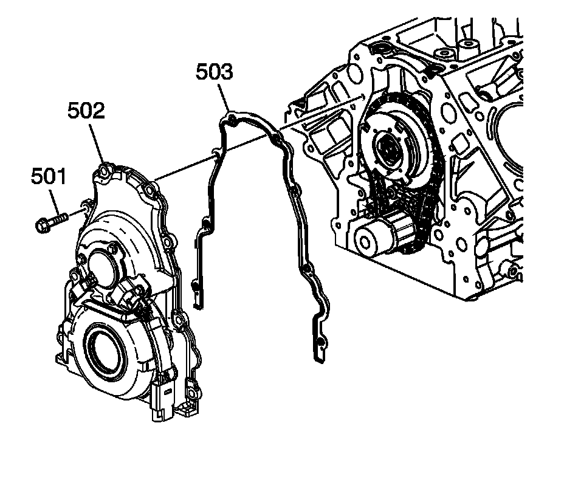

23. Engine Front Cover Removal
Engine Front Cover Removal (RPO LY6/L76/L92)

1. Remove the front cover bolts (501).
2. Remove the front cover (502) and gasket (503).
3. Discard the front cover gasket.

4. Remove the camshaft position (CMP) sensor wire harness (737) and bolts (738).

5. Remove the CMP sensor (703).
6. Remove the O-ring (704) from the sensor, as required.

7. Remove the CMP actuator magnet (752), bolts (751), and gasket (753).
8. Remove the oil seal (140).